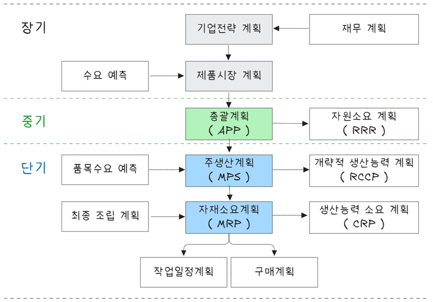

| 계획기능 | 통제기능 |
|---|---|
| 절차계획(순서계획) | 작업배정(우선순위 통제) |
| 공수계획(능력소요계획) | 여력관리 |
| 일정계획 | 진도관리 |
생산계획 수립
생산 계획 구조

생산계획은 장기, 중기, 단기 계획으로 수립한다.
- 장기계획(2년 이상)
-
- 기업전략 계획, 제품 시장 계획, 재무계획(공장입지, 생산능력계획, 설비투자계획, 사세 확장) 등
- 중기계획(6개월 ~ 2년)
-
- 총괄계획, 인력계획, 자재계획, 외주계획
- 단기계획(6개월 이내)
-
- 생산계획(분기, 월별, 주별, 일별 예측)
일정계획
일정계획(scheduling)이란 생산계획 내지 제조명령을 시간적으로 구체화 하는 과정이다. 생산자원을 합리적으로 이용하여 생산할 품목과 생산량을 예정된 시간에 생산할 수 있도록 계획하고 통제하는 것이다.
- 일정계획 종류
-
- 대 일정계획(master scheduling), 기준일정계획이라고도 하며 수주에서 출하까지 일정계획을 말함
- 중 일정계획(operating scheduling), 대 일정계획을 토대로 공정 개시일과 완료일을 작성
- 소 일정계획(detail scheduling), 세부일정계획으로 작업자, 기계별 일정계획을 말함
- 일정계획 기능
-
- 부하결정 → 작업우선순위결정 → 작업할당 → 작업배정 → 진도관리 순으로 진행
- 기준일정
-
- 작업시간 + 준비작업시간 + 여유시간 + 정체시간
공정관리는 계획기능과 통제기능으로 구분할 수 있다.
- 절차계획(routing)
-
- 작업계시에 앞서 능률적이고 경제적인 작업절차를 결정하기 위한 것(작업방법과 순서가 정해짐)
- 공수계획(loading)
-
- 생산계획량을 완성하는데 필요한 인원이나 기계 부하를 결정하게 됨
- 일정계획(scheduling)
-
- 작업순서와 방법이 결정되고(절차계획), 생산량이 공수로 환산되면(공수계획), 작업 시작시간과 종료시간을 결정하는 과정
- 작업배정(dispatching)
-
- 절차계획과 일정계획표에 따라서 생산을 개시하도록 허락
- 여력관리(capacity control)
-
- 통제단계에서 실제 능력과 부하를 조사하여 양자 균형을 이루도록 조정
- 진도관리(expedition or follow up)
-
- 작업배정(작업지시)에 의해 작업 진도상황이나 과정을 수량적으로 관리하는 것
APP(총괄생산계획)
총괄생산계획(APP, aggregate production planning)은 중기 수요에 대응하여 산출물 공급을 계획하는 것으로 중기적으로 기업 전반적인 생산수준, 재고수준, 고용수준 등을 설정한다.
- 총괄계획 대상 기간은 6개월에서 2년 수준이며 평균적으로 1년(12개월) 단위로 중기계획 수립
- 수요 충족을 위해 생산설비는 생산능력 범위 내에서 이뤄져야 하고 사업전략에 대한 관련 비용이 최소가 되도록 수립
- 총괄생산계획 주요 목표
-
- 이익극대화
- 생산비용 최소화
- 고객서비스 최적화
- 재고수준 최소화
- 생산율 변동 극소화
- 작업자 수준 변동 극소화
- 잔업 및 하청 최소화
- 시설 및 설비 이용률 최대화
총괄생산계획 전략적 대안은 능동적 또는 수동적으로 수립할 수 있다.
- 능동적 대안
-
- 수요이동 촉진
- 수요 지연 촉진
- 보완적 제품 개발
- 수동적 대안
-
- 재고수준 변경
- 작업자 수준 변경
- 생산율 변경
- 시간제 작업자 활용
총괄생산계획 입력과 산출은 다음과 같다.
- 입력(Input)
-
- 시장수요, 상황
- 제도 및 법규
- 경쟁업체 정보
- 기술변화
- 인력수급(Man)
- 설비능력(Machine)
- 재고수준(Material)
- 기타 생산관련 정보
- 산출(Output)
-
- 총괄생산계획
- 재고수준
- 인력 수준(고용/해고)
- 정규 및 잔업/특근 시간
- 하청 생산량
- 기타 생산계획
- 총괄생산계획
총괄과 분해
총괄생산계획(Aggregate Production Planning, APP)은 생산 계획을 수립하는 과정에서 중요한 두 가지 접근 방식인 총괄(Aggregation)과 분해(Disaggregation)를 사용한다. 각 접근 방식은 생산 계획을 어떻게 수립할지에 대한 전략적 차이를 나타내며, 생산 계획의 효율성과 유연성에 큰 영향을 미친다.
총괄(Aggregation)
- 목적: 전체 제품군을 대상으로 생산 계획을 세우고, 이를 보다 단순화하여 자원의 배분을 효율적으로 할 수 있도록 한다.
- 설명: 총괄은 제품군을 전체적으로 묶어서 계획을 수립하는 접근 방식이다. 개별 제품의 세부적인 수요 예측을 제외하고, 전체적인 생산량을 고려하여 자원 배분을 한다. 예를 들어, 여러 종류의 제품을 하나의 큰 그룹으로 묶어 생산 계획을 세우고, 이를 통해 자원을 배분하거나 생산능력을 설정한다.
- 장점:
- 세부적인 제품 수요 예측이 필요 없으므로 계획이 간단하다.
- 생산 자원을 효율적으로 관리할 수 있다.
- 전반적인 생산 효율성 향상.
- 단점:
- 개별 제품의 수요를 반영하지 못하므로 일부 제품군의 수요 변동에 유연하게 대응하기 어렵다.
- 제품별 우선순위 설정이 어려울 수 있다.
분해(Disaggregation)
- 목적: 총괄 계획을 세부적인 생산 계획으로 변환하고, 각 제품에 대해 구체적인 생산량을 설정하여 세밀한 자원 배분을 한다.
- 설명: 분해는 총괄생산계획에서 설정한 목표나 계획을 개별 제품에 맞게 세분화하여 구체적인 생산 계획을 수립하는 방식이다. 각 제품군이나 제품별로 수요 예측을 반영하여 생산 계획을 세운다.
- 장점:
- 각 제품에 대한 세부적인 수요 예측을 반영하므로 보다 정교한 생산 계획이 가능하다.
- 개별 제품의 생산 우선순위와 자원 배분을 명확히 할 수 있다.
- 단점:
- 계획이 복잡하고 시간이 많이 소요된다.
- 자원의 배분이 세부적으로 이루어져 관리가 어려울 수 있다.
총괄과 분해의 관계
- 총괄(Aggregation)은 넓은 범위에서 생산 계획을 설정하며, 분해(Disaggregation)는 이 계획을 세부적으로 나누어 각 제품군별로 구체적인 실행 계획을 수립한다.
- 총괄은 생산 계획의 기본적인 틀을 제공하고, 분해는 그 틀을 실제 상황에 맞게 실행 가능하도록 변환한다.
- 예시
-
- 총괄: 회사는 전체적으로 1,000대의 자동차를 생산할 계획을 세운다. 이때, 총괄생산계획은 1,000대를 생산하는 목표를 설정한다.
- 분해: 자동차를 3가지 모델(A, B, C)로 나누어 각각의 수요를 예측하고, 각 모델별로 생산 계획을 세운다. 예를 들어, 모델 A는 400대, 모델 B는 300대, 모델 C는 300대로 분해할 수 있다.
총괄(Aggregation)은 대규모의 생산 계획을 간단히 설정하는 반면, 분해(Disaggregation)는 세부적인 계획을 수립하여 실질적인 생산 현장에서 효율적으로 실행할 수 있게 한다. 두 접근 방식은 서로 보완적이며, 기업은 총괄과 분해를 적절히 결합하여 생산 계획을 수립하고 자원을 최적화한다.
총괄생산 전략 종류
flowchart LR 00[총괄생산계획 전략] 10[추종 전략] 20[평준화 전략] 30[혼합 전략] 00 --- 10 & 20 & 30 10 --- 101["고용수준 변동 전략"] & 102["생산율 변동 전략"] 20 --- 201["재고수준 변동 전략"]
총괄생산계획은 변화하는 수요 대처와 기업 이윤 극대화를 위해 손실과 비용이 최소화되도록 결정한다. 생산계획전략에는 수요추종 전략, 생산평준화 전략, 혼합 전략이 있다.

| 전략 | 수요추종전략 | 생산평준화 |
|---|---|---|
| 고용수준 | 변동 | 일정 |
| 생산율 | 변동 | 일정 |
| 재고수준 | 최소화 | 일정 보유 |
수요추종 전략은 수요변동에 따라 생산량과 고용수준을 변화시키는 방법이다. 즉, 수요량이 증가하게 되면 고용을 하고, 반면 수요가 감소하게 되면 해고하는 방법이다. 단, 종업원수를 다음과 같은 방법으로 일정하게 유지할 수 있다.
- 종업원수 일정 유지
-
- 잔업, 특근, 초과근무 또는 근무시간 단축이나 하청 활용
- 장점: 종업원 고용 불만 해소
- 단점: 잔업수당, 조업단축 유휴비용, 하청비용이 큰 경우 사용이 곤란하고 지나친 초과근무로 사기, 품질저하 및 하청업체 및 하청업체 품질 관리 어려움
생산평준화 전략은 변화하는 수요에 대하여 생산수준과 고용수준을 일정하게 유지하는 방법이다. 종업원 고용불안을 해소하고 과도한 잔업 및 하청 등 비용과 품질문제를 회피할 수 있는 장점이 있다.
- 수요 대응 전략
-
- 재고를 활용하는 방법
- 수요가 작으면 일정 수준 생산 유지 → 적정재고 유지, 수요가 많을 때 활용
- 수요 자체를 조절하는 방법
- 수요가 많으면 납기를 연장, 수요가 적으면 가격할인 등 판매촉진을 통해 수요 활성화
- 총 생산량을 일정하게 유지하는 방법
- 제품 품목별 기간에 따라 생산량을 조절
- 1개 생산라인에서 다른 제품을 병행 생산
- 계절성 품목으로 겨울에는 난방 전열가전, 여름에는 선풍기, 냉방가전 생산 증대
- 재고를 활용하는 방법
혼합전략은 수요추종 전략과 생산평준화 전략을 혼합한 방식으로 수요 변동에 유연하게 대응하고 종업원 고용 및 재고 수준 등 상황에 따라 대처하는 방법이다. 추종전략에서는 수요변화에 따라 고용수준이 변화하고 생산평준화 전략에서는 고용 수준에 변화가 없다. 기업에서는 두 가지를 혼합한 혼합전략이 더 널리 사용된다. 어떤 수요 및 공급관리 수단을 혼합하여 사용하느냐는 기업마다 처한 환경과 경영활동에 따라 달라진다. 적절한 총괄계획 전략은 생산활동이나 업무 특성에 따라 달라진다.
- 자동차, 전자업종 등 숙력된 작업자 확보가 어려운 경우
-
- 점진적 고용증대를 통한 생산능력 확충과 동시에 잔업, 하청을 활용
- 노동 집약적이며 노동력확보가 용이한 경우
-
- 고용수준을 조절하여 수요에 대응(토목공사, 택배 등)
수요추종 전략과 생산평준화 전략을 비교하면 다음과 같다.
| 요인 | 추종전략 | 평준화전략 |
|---|---|---|
| 요구되는 노동기술 수준 | 낮음 | 높음 |
| 직무 재량권 | 낮음 | 높음 |
| 보수 | 낮음 | 높음 |
| 종업원당 요구되는 훈련 | 낮음 | 높음 |
| 노동력 이직률 | 높음 | 낮음 |
| 종업원당 채용-해고 비용 | 낮음 | 높음 |
| 요구되는 감독 양 | 높음 | 낮음 |
| 요구되는 예산 수립 및 예측 유형 | 단기 | 장기 |
RRP
Resource Requirements Planning (RRP)는 자원 요구 계획을 의미하며, 생산 과정에 필요한 자원의 수요를 예측하고 관리하는 시스템이다. RRP는 자원을 효율적으로 계획하고 관리하여 생산 활동이 원활하게 진행될 수 있도록 돕는 중요한 도구다. 이 시스템은 인력, 재료, 설비 등 다양한 자원을 적시에, 적절하게 확보하는 것을 목표로 한다.
- RRP의 목적
- RRP는 주로 생산 계획을 바탕으로 필요한 자원을 예측하고, 자원의 수급을 조정하여 생산 활동에 필요한 자원이 부족하거나 과잉되지 않도록 하는 데 중점을 둔다.
- 자원 부족 방지: 필요한 자원이 부족하지 않도록 미리 계획하여 생산 과정에 차질이 없게 한다.
- 자원 과잉 방지: 과잉 자원을 예측하고 불필요한 비용을 절감할 수 있도록 한다.
- 자원 최적화: 생산 활동에 필요한 자원을 효율적으로 배분하고, 자원의 낭비를 줄인다.
- 생산 계획과 자원 계획의 일치: 생산 계획을 수립할 때 필요한 자원의 수요를 정확히 예측하고, 그에 맞춰 자원을 조달할 수 있도록 한다.
- RRP의 주요 요소
- RRP는 다양한 자원에 대한 요구 사항을 계획하고 관리하는 과정을 포함한다.
- 자원 수요 예측:
- 생산 계획에 따라 어떤 자원이 언제 필요한지 예측한다. 예를 들어, 특정 제품을 생산하려면 어떤 원자재가 필요하고, 그 원자재가 언제 조달되어야 하는지를 파악한다.
- 자원 가용성 분석:
- 현재 보유한 자원과 필요한 자원을 비교하여 자원의 가용성을 파악한다. 예를 들어, 현재 재고로 충분히 대응할 수 있는지, 아니면 추가로 자원을 확보해야 하는지를 결정한다.
- 자원 조달 계획:
- 자원이 부족할 경우 이를 확보할 방법을 계획한다. 외부 공급업체와의 협력을 통해 자원을 조달하거나, 생산 능력을 확장할 필요가 있을 수 있다.
- 자원 할당 및 조정:
- 생산 일정에 맞춰 자원을 효율적으로 배분하고, 필요한 자원이 적시에 준비될 수 있도록 조정한다.
- RRP와 관련된 시스템
- RRP는 종종 더 큰 ERP (Enterprise Resource Planning) 시스템의 일부로 사용된다. ERP 시스템은 기업의 전반적인 자원 관리와 운영을 지원하며, RRP는 그 중 하나로 자원의 수요 예측과 조달 계획을 담당한다. 또한, MRP(자재소요계획) (Material Requirements Planning)와 밀접하게 연결되어 있다. MRP는 주로 재료에 대한 계획에 집중하지만, RRP는 자원 전체를 포함한다.
- RRP의 프로세스
-
- 생산 계획 수립: 먼저 생산 계획이 수립된다. 이 계획에는 어떤 제품을 어떤 수량만큼 생산할 것인지가 포함된다.
- 자원 요구 사항 정의: 생산 계획에 기반하여, 생산에 필요한 자원을 구체적으로 파악한다. 여기에는 인력, 기계, 원자재 등이 포함된다.
- 자원 수요 예측 및 계획: 자원 요구 사항을 기반으로 자원에 대한 수요 예측을 세운다. 예를 들어, 특정 기계나 노동력, 원자재의 수요가 언제, 얼마나 필요할지 예측한다.
- 자원 확보 및 조정: 예측된 자원을 확보하고, 가용 자원과 비교하여 부족한 자원을 확보하거나 과잉 자원을 조정한다.
- 자원 할당 및 실행: 확보된 자원을 생산 일정에 맞춰 할당하고, 생산 활동이 원활하게 진행될 수 있도록 관리한다.
- RRP의 장점
-
- 효율적인 자원 관리: 생산에 필요한 자원을 적시에 적절하게 확보하고, 자원의 낭비를 줄일 수 있다.
- 비용 절감: 자원 과잉 또는 부족으로 인한 비용 낭비를 줄이고, 자원을 효율적으로 관리함으로써 비용을 절감할 수 있다.
- 생산 일정 준수: 자원을 미리 계획하고 준비함으로써 생산 일정이 지연되지 않도록 할 수 있다.
- 업무의 효율성 향상: 자원 요구 사항을 체계적으로 관리하고 최적화하여 업무의 효율성을 높일 수 있다.
- RRP의 단점
-
- 정확한 수요 예측 어려움: RRP는 정확한 수요 예측에 의존한다. 하지만 수요 예측이 틀릴 경우 자원 관리에 어려움이 발생할 수 있다.
- 시스템 구축 비용: RRP 시스템을 도입하려면 고도화된 IT 시스템과 데이터 관리가 필요하며, 초기 구축 비용이 발생할 수 있다.
- 유연성 부족: 자원 계획이 고정적일 수 있어 급격한 수요 변화나 생산 일정 변경에 즉각적으로 대응하기 어려울 수 있다.
- RRP의 예시
-
- 자동차 제조업체: 자동차를 제조하는 회사에서는 특정 모델을 생산하기 위해 부품, 인력, 설비 등을 계획해야 한다. 예를 들어, 특정 모델을 생산하기 위해 필요한 부품이 부족하다면, RRP를 통해 필요한 자원을 사전에 조달하고 생산 일정에 맞게 할당한다.
- 전자제품 제조업체: 전자기기 제조업체는 다양한 부품과 자원을 사용하여 제품을 생산한다. 이 경우, RRP 시스템을 통해 각 부품의 수급과 생산 능력을 정확하게 예측하여 생산 계획을 최적화한다.
RRP (Resource Requirements Planning)는 자원 계획과 관리를 통해 생산 활동에 필요한 자원의 부족과 과잉을 방지하고, 효율적인 자원 관리를 통해 비용 절감과 생산 일정 준수를 달성하려는 중요한 시스템이다. 이를 통해 기업은 자원을 최적화하고, 생산성을 높일 수 있다. 그러나 수요 예측의 정확성에 의존하고 있기 때문에 예측이 부정확할 경우 어려움이 있을 수 있다.
생산능력 결정 전략
생산시스템을 신설, 확장 시 생산능력을 결정하게 된다. 생산능력 결정 시 여유 능력 크기는 얼마로 할 것인가? 증설 시기는 언제로, 규모는 얼마로 할 것인가 등을 검토해야 한다.
생산능력이란 제조환경에서 일저 기간 동안 생산할 수 있는 최대 산출량을 의미한다. 일반적으로 시간당 단위 또는 일일 단위로 측정되며, 공장이나 설비 최대 출력 수준을 나타낸다. 생산능력은 생산 계획, 자원 할당, 재고 관리 등에 중요한 역할을 한다. 또한 생산능력을 초과하지 않도록 관리하는 것이 중요하다. 그렇지 않으면 생산 지연이 발생하거나 품질이 저하될 수 있다.
- 생산능력 척도(분류)
-
설계능력: 현재 제품 설계, 제품 혼합, 생산 정책, 인력, 시설 및 장비를 가지고 공정에서 일정 기간 동안에 가능한 최대 생산량유효능력: 주어진 여건(제품 혼합, 기계 보전, 점심시간, 휴식시간, 일정계획 어려움, 품질요소 등) 하에서 일정기간 동안에 가능한 최대생산량실제능력: 일정기간 동안 실제로 달성한 생산량
- 유효성 평가(측정 방법)
-
이용률= 실제능력/설계능력효율= 실제능력/유효능력
최적조업도는 적정조업도라고도 하며 기업 산출량 단위당 평균비용이 최저가 되는 조업도를 말한다. 최적조업도는 기술적으로 가장 유리한 조업도를 나타낼 뿐, 그것이 경제적으로 가장 유리한 조업도라는 것은 아니다.
생산능력 결정 요인은 크게 영향요인과 제약요인이 있다.
- 영향요인
-
- 시설요인(Pysical Factors), 공정 및 시설 입지, 공정설계 및 건물, 시설 및 설비 배치, 공장 환경, 운반시설 등
- 제품 및 서비스 요인(Proudct/Service Factors), 제품 및 서비스 설계, 단순화/표준화, 품목 최적 구성, 품질 요인, 원자재 구성 및 소요량 등
- 공정요인(Process Factors), 공정 및및 설비 생산량, 공정 및 설비 븡력
- 인력력요인(Human Factors), 직무설계, 직무내용, 작업방법, 작업강도, 작업환경, 교육 및 경험, 동기부여, 보상 등
- 시스템 가동 상의 요인, 설비보전, 일정관리,품질관리 등 생산 시스템 관리 기준
- 제약요인
-
- 시장
- 원자재
- 자금
- 노동력
기간별 생산능력 계획시 고려사항은 다음과 같다.
- 단기 생산능력 계획
-
- 가격조정
- 정비 계획 조정
- 생산성 향상 방안
- 납기 연기
- 재고 수준 변화
- 종업원 교육
- 고용수준 가동률 변동
- 고융수준 변동
- 장기 생산능력 계획
-
- 공격전략 - 장기적인 시장 확보 및 시장점유율 향상, 여유능력으로 불확실한 수요에 대한 대응이 가능하며 납기지연이 줄어 들어 고객에게 신뢰감을 주어 안정적인 구매자 확보 가능
- 방어전략 - 생산능력 효율 향상으로 투자에대한 수익률 향상, 장기적으로 시장점유율을 잠식당할 위험 존재
- 평균전략 - 약간의 초과 능력과 수요 부족을 허용하는 생산계획이 바람직
장기적으로이익을 최대화하는 관점에서 장기 생산능력 의사결정에 대한 체게적인 접근은 다음과 같다.
- 대규모 접근법
-
- 규모의 경제로 연간 생산 소비를 감소시킬 수 있으나 고정비 부담이 크고 수요 변동이나 제품 믹스 시 유여넛이 떨어진다
- 점진적 접근법
-
- 단계적으로 작은 단위로 확장하는 것으로 소요자금이 적게 들며 유연성이 큼
- 필요 생산용량 추정
- 예측된 수요와 현재 용량 간 차이 계산
- 대안 개발
- 대안 평가
- 정성적 평가 - 수요, 경쟁자 반응, 기술 변화, 비용 추정치 등 불확실성
- 정량적 평가 - 현금 흐름
- 단계적으로 작은 단위로 확장하는 것으로 소요자금이 적게 들며 유연성이 큼
- 생산시설에 대한 의사결정 절차
-
- 시설 규모 결정 - 최적 규모 설정
- 입지 설정 - 관련된 모든 비용 합이 최소가 되도록 결정
생산능력 전략 사전 검토 사항
경영자는 생산능력을 결정하기 앞서 생산능력 전략 차원에서 여유능력 크기와 확장 시기 및 규모를 검토해야 한다.
- 여유능력 결정(Sizing Capacity Cushion)
-
- 여유능력(capacity cushion)은 기대를 초과하는 잉여 능력으로 최적 여유 능력은 산업 분야별 차이가 있다.
- 충분한 여유능력은 수요가 증가하는 추세에 있거나 불확실한 경우 또는 안정적인 공급을 요하는 경우에 필요하다.
- 지나친 여유능력은 과대한 유지비용으로 수익률을 저하시킬 수 있다.
- 확장 시기와 규모(Timing and sizing Expansion)
-
- 사전 확장 전략(proactive capacity strategy)
- 재고 부족 손실 > 잉어 능력 비용 x 2배
- 여유 내지 초과 능력을 유지하는 비용보다 재고 부족(품질) 손실이 상당히 높을 때, 고성장 산업에서 보통 채택되는 확장주의 전략(Expansionist Strategy)
- 수요에 앞서가는 사전 확장 전략은 규모의 경제와 학습효과가 강한 경우 생산능력 크기가 상대적으로 크므로 능력 부족으로 인한 판매기획 상실을 줄일 수 있다.
- 이들 산업에서 여유 능력을 갖고 있는 기업은 능력이 한정된 경쟁업체들로부터 시장점유율을 잠재적으로 확보할 수 있다.
- 사후 증설 전략(Reactive Capacity Strategy)
- 재고 부족 손실 < 잉여 능력 비용 x 0.67
- 여유 능력 유지 비용이 품절 비용ㅇ를 초과할 때 채택되는 전략으로 수요를 관망하다가 증설하는 보수 전략
- 능력 이용률은 높지만 시장 위치가 불안한 기업에서 채택
- 수요를 관망(wait and see)하다가 증설하는 보수적인 증설 전략으로 관망 기간 중 어느 정도 부족 능력은 감수해야 한다.
- 사후 증설 전략은 투자 위험을 줄일 수 있으나 수요에 뒤처지며 생산능력 부족을 메우기 위한 잔업, 임시고용, 하청 등 단기적인 대안에 의존하는 경우가 많다.
- 이 전략은 능력 이용률 높지만 시장 위치가 불안한 기업에서 흔히 채택된다.
- 경쟁업체에서 동시에 생산능력을 증대시키게 되어 많은 잉여 능력을 유발하여 경쟁은 더울 치열해진다.
- 사전 확장 전략(proactive capacity strategy)
- 기대 가치 유지 전략(Expected Capacity Strategy)
-
- 기대 수요에 근접한 능력 유지(사전/사후 절충형)
- 사전 확장, 사후 증설 전략을 절충한 접근 방식으로 가급적 기대 수요에 근접한 능력을 유지하려는 전략
- 이 경우 충분한 능력을 갖지 못한 가능성만큼(잉여) 능력을 가질 가능성을 만들어 손실을 상쇄하는 전략이다.
전략 대안 평가
간편한 전략평가 방법으로 단위당 품절 손실과 함게 잉여 능력 비용을 추정하는 능력비율(Capacity Ratio, CR)을 산정하여 판단할 수 있다.
- 질적요인
-
- 시설투자 자금 동원 능력
- 주변 생활 환경
- 지역 기술 및 교육수준
- 고객과 근접성으로 인한 수요 창출
- 비용요인
-
- 지역별로 차이가 날 수 있는 인건비
- 세금 및 보험료
- 전기, 가스, 수도 등 공공사업 비용
- 수송 비용
- 토지, 건물 및 설비비용
- 용량 계획 평가 도구
-
- 수요 불확실성과 변동을 보다 공식적으로 분석 가능한 도구
- 대기행렬 모형 - 무작위적이고 독립적인 고객들의 행동을 도착 시간과 서비스 요구 측면에서 검토
- 시뮬레이션 - 복잡한 대기 열 문제를 시뮬레이션을 통해 프로세스 병목과 여유 용량을 찾아냄
- 의사결정 나무 - 수요가 불확실하고 이어지는 의사결정이 포함될 경우 다양한 설비확장안 평가 시 사용
- 수요 불확실성과 변동을 보다 공식적으로 분석 가능한 도구
- 생산능력 결정 기법
-
- 생산능력 결정 기법으로 일반적인 방법은 선형계획법과 확률계획법이다.
- 선형계획법은 장래 제품 수요와 경쟁기업 공급능력을 비교적 정확하게 예측할 수 있는 확실한 상황에서 유용
- 확률계획법은 장기적 제품 수요를 추정하지만 미래 제품 수요와 공쟁기업 공급 능력을 상대적으로 정확하게 예측하기 어려운 경우 유용, 대표적으로 대기행렬, 시뮬레이션, Decision Tree Approach 등
- 생산능력은 조직 전체에 걸쳐 전략 및 프로세스와 밀접하게 연계되어야 함
- 입지 문제, 자원 유연성, 재고 같은 분야의 의사결정을 할 때 여유 용량에 미치는 효과를 고려함
- 생산능력 결정 기법으로 일반적인 방법은 선형계획법과 확률계획법이다.
능력비율(CR, capacity ratio)
CR은 단위당 품절 손실과 함게 잉여 능력을 추정하여 능력 비율을 산정, 평가하는 지표이다.
\[ 능력비율(CR) = \frac{(C_s - C_e)}{C_s} \] \[ 여기서 \ C_s는 \ 단위당 \ 품절 \ 손신, C_e는 \ 단위당 \ 잉영능력 \ 유지 \ 비용 \]
- CR에 따른 생산능력 전략
-
- CR <= 0.5
- 품절 비용 < 0.67 x 잉여 능력 유지 비용
- 사후 증설 전략
- -0.5 < CR < 0.5
- 기대 가치 유지 전략
- CR >= 0.5
- 품절비용 > 2 x 잉여 능력 비용
- 사전 확장 전략
- CR <= 0.5
MPS(기준일정계획)
기준일정계획(MPS, master production schedule)이란 생산시스템에서 생산되는 개별 최종품목에 대한 단기생산계획으로 주단위로 총괄수요를 분해한 개별품목 수요에 대한 충족계획이다.
- MPS 수립 목표
-
- 납기준수 - 고객과 약속한 일정에 맞출 수 있는지 일정 수립 → 생산 신속성
- 생산비용 최소화 - 생산설비에 대한 과중한 부하 또는 적정한 생산 능력 효율적 활용 → 생산비용 최소화
- MPS 시간 구역
-
- 동결된 시간(frozen): 특별상황 관리책임자 허가 없이 생산일정 변경 불가
- 확정된 구간(fixed): 예외적인 상황 발생에 한하여 변경 가능
- 채워진 구간(full): 일정변경, 사용 가능한 생산능력 및 주문처리를 위해 할당되었으나 일정 변경으로 인한 비용에는 큰 영향을 미치지 않음
- 개방된 구간(open): 새 주문을 자유롭게 반영 가능, 아지 생산능력 미 반영
- 주요 특성
-
- 총괄생산계획을 세분화하고 구체화시킨 생산계획이다.
- 자재소요을 발생시킨다.
- 생산능력소요를 발생시킨다.
- 작업이나 주문 우선순위가 결정된다.
- 타 부서 일상계획에 활용할 수 있다.
MPS 작성 절차는 다음과 같다.
- 재고량 예측치 및 확정된 주문량에 따라 예측 보유재고량 산출
- 수요량 대비 재고 부족 시 생산 LOT 크기 감안하여 MPS 수량 계획 수립
\[ 예측된 \ 재고보유 \ 수량 \ = \ (직전기간 \ 말 \ 재고 \ 수준) + (MPS \ 수량) - (예측된 \ 수요량) \] 약속 가능수량(ATP, available to promise quantities)은 고객과 약속한 제품이나 서비스 수량을 의미하며 다음과 같이 계산한다.
\[ ATP= \begin{cases} \text{(기초재고보유량) + (MPS 수량) - (다음번 MPS가 도래하기 전까지 확정된 고객주문량), 첫째 주}\\ \text{(MPS 수량) - (다음 번 MPS가 도래하기 전까지 확정된 고객주문량), MPS가 계획된 주} \end{cases} \tag{11.1}\]
RCCP

RCCP(개략적 생산능력계획, rough-cut capacity planning)은 MPS 실행에 소요되는 생산능력을 추정하여 이를 효과적으로 확보하기 위한 개략적인 계획 활동을 의미한다. RCCP 목적은 생산 소요계획과 가용 생산이 일치하도록 하여 특정 자원 과대 또는 과부하가 걸리지 않도록 한다.
- 종합계수법
-
- RCCP 기법중 가장 단순한 방법으로 제품 수량, 제품 단 단위단 노동시간, 각 작업장 가동실적 등 3가지 데이터를 이용하여 계획을 수립함
- 생산능력 명세서법
-
- 제품 하나를 생산하는데 각 작업장별(또는 공정별)소요시간을 파악하여 생산능력 명세표를 DB화하여 각 작업장에 배분하는 방식
- 부하프로필법
-
- 일, 주, 분기별 생산능력 소욜를 도표로 나타내는 것으로 정상능력을 초과하는 기간에 대해 부하를 조정함
- 부하조정법: 잔업, 이동배치, 생산조정 등 조정불가시 MPS 조정
MRP(자재소요계획)
MRP(Material Requirements Planning)는 제조업에서 원자재 및 부품의 수요를 계획하고 관리하는 시스템이다. 제품 생산에 필요한 자재를 적시에 확보함으로써 생산 일정이 원활하게 진행되도록 돕는다. MRP는 최종 제품의 생산 일정과 제품 구조(BOM, Bill of Materials)를 기반으로 각 부품 및 자재의 수요를 역산하여 계획을 수립한다.
- MRP의 목적
-
- 적시 자재 조달: 생산 일정에 맞춰 필요한 자재를 준비해 생산 지연을 방지한다.
- 재고 최소화: 불필요한 재고를 줄여 보관 비용을 절감한다.
- 생산 계획 최적화: 생산 효율을 높이고 납기 준수를 보장한다.
CRP
CRP(Capacity Requirements Planning)는 생산 계획 과정에서 필요한 자원 용량을 분석하고 조정하여 생산 목표를 달성할 수 있도록 지원하는 시스템이다. 이 시스템은 생산 계획과 자원의 용량 사이의 균형을 맞추는 데 중요한 역할을 한다. CRP는 주로 제조업체에서 사용되며, 생산 공정에 필요한 기계, 인력, 원자재 등의 자원의 용량을 예측하고 조정하는 데 초점을 맞춘다.
- CRP 주요 목적
-
- 생산 자원의 용량을 평가하다: 계획된 생산 요구 사항에 맞춰, 필요한 기계, 노동력, 자원 등의 용량을 평가하고, 생산을 원활하게 진행할 수 있도록 보장하다.
- 생산 일정 조정하다: 자원의 용량이 부족하거나 과잉인 경우 이를 조정하고, 생산 일정에 맞추어 자원을 배분하다.
- 효율성 증대하다: 자원의 과잉 사용을 피하고, 자원 부족으로 인한 생산 지연을 방지함으로써 생산 효율성을 극대화하다.
- CRP 주요 구성 요소
-
- 로드 (Load): 특정 자원(기계, 인력 등)에 대해 필요한 작업 시간이나 처리량을 계산한 값이다. 이는 생산 계획을 기준으로 각 자원에 할당되는 작업량을 나타낸다.
- 용량 (Capacity): 실제 자원이 제공할 수 있는 작업 시간이나 처리 능력이다. 예를 들어, 기계가 하루에 몇 시간씩 가동 가능한지, 노동력이 하루에 몇 시간을 일할 수 있는지를 평가한다.
- 용량 격차 (Capacity Gap): 요구되는 용량과 실제 제공 가능한 용량 간의 차이를 말한다. 이 차이를 해결하기 위해 자원 추가, 일정 조정, 외부 자원 활용 등을 고려할 수 있다.
- CRP 과정
-
- 주문 또는 생산 계획 수립: 먼저 생산 계획을 세우고, 각 제품이나 주문에 필요한 자원량을 예측한다.
- 용량 계산: 각 자원의 용량을 계산하여, 계획된 생산 일정에 맞게 자원들을 얼마나 배정해야 하는지 평가한다.
- 격차 분석: 실제 용량과 요구 용량 간의 격차를 분석하여, 부족한 자원을 어떻게 보충할지 결정한다.
- 조정 및 최적화: 자원의 부족을 해결하거나 과잉 자원을 조정하여, 효율적으로 생산 목표를 달성할 수 있도록 생산 계획을 수정한다.
| 장점 | 단점 |
|---|---|
| 효율적인 자원 관리:자원의 부족이나 과잉 문제를 미리 예측하고 조정함으로써 생산성이 높아진다. | 고급 데이터 요구:정확한 자원 계획을 위해서는 정확한 데이터와 예측이 필요하며, 데이터가 부족하거나 부정확하면 계획에 차질이 생길 수 있다. |
| 생산 일정 정확도 향상:자원의 용량을 정확히 파악하여 생산 일정을 더 효율적으로 조정할 수 있다. | 복잡성:대규모 생산 환경에서는 수많은 자원과 작업이 관련되어 있어 CRP를 제대로 운영하려면 복잡한 계산과 관리가 필요하다. |
| 비용 절감:자원의 과잉이나 부족을 미리 예방함으로써 불필요한 비용을 절감할 수 있다. |
CRP는 MPS와 MRP와 함께 사용되는 중요한 생산관리 도구로, 생산 자원을 효율적으로 배분하고 생산 목표를 달성하는데 중요한 역할을 한다.
MRP 입력물
MRP 3대 필수요소는 기준일정계획(MPS), 자재명세서(BOM) 그리고 재고기록파일(IRF)이다.
- MPS
-
- MPS(기준일정계획) 참고
- 최종 제품 생산 일정 및 생산량을 계획하는 일정표
- BOM
-
- BOM 참고
- 최종 제품을 구성하는 원자재 및 부품 목록과 그 수량을 명시한 문서
- IRF(Inventory Records File)
-
- 재고관리에 기본이 되는 자재별 수불현황과 현재고, 조달 기간 명시
- 현재 보유 중인 재고와 리드타임, 입출고 내역 등을 기록한 파일
- MRP 작동 원리
-
- 순수요 계산: BOM과 현재 재고를 기반으로 부족한 자재의 순수요를 계산한다.
- 소요량 산출: 최종 제품의 생산 일정에 맞춰 필요한 자재 및 부품의 필요 시점을 계산한다.
- 주문 일정 작성: 리드 타임을 고려하여 자재를 언제 주문하거나 생산해야 하는지를 계획한다.
- MRP의 장점
-
- 생산 효율성 향상: 필요한 자재를 적시에 조달해 생산 과정의 병목 현상을 방지한다.
- 재고 비용 절감: 과잉 재고를 방지하고, 필요한 자재만 확보하여 재고 비용을 최소화한다.
- 납기 준수 향상: 제품 생산 및 납품 일정을 보다 정확하게 계획할 수 있다.
- MRP의 한계
-
- 데이터 정확성 필요: BOM, 재고 기록 등이 정확하지 않으면 계획이 어긋날 수 있다.
- 복잡성: 많은 품목과 생산 단계가 얽혀 있어 관리 및 유지보수가 어렵다.
- 유연성 부족: 수요 변동이나 생산 일정 변화에 대한 즉각적인 대응이 어렵다.
- 리드 타임 의존성: 자재 조달 시간이 길어지면 전체 생산 일정이 지연될 수 있다.
MRP 산출물
- 자재 소요량 계획 (Material Requirements Plan)
- 생산 일정과 BOM을 기반으로 각 자재와 부품의 소요량을 계산한 결과물이다. 언제, 얼마나 자재를 주문하고 생산해야 하는지에 대한 세부 계획이 포함된다.
- 주문 계획 (Purchase Orders)
- 자재 소요량에 따라 공급업체에 발주해야 할 자재 목록과 주문 일정이다. 이 정보를 통해 자재를 적시에 확보할 수 있다.
- 생산 일정 (Production Schedule)
- 각 부품 및 자재의 생산 계획과 시간표를 포함한다. 생산라인의 자원을 최적화하고 생산 과정에서 필요한 자원을 미리 준비할 수 있다.
- 재고 수준 예측 (Inventory Status)
- 예상되는 재고 수준을 기준으로 자재의 부족 여부를 미리 파악할 수 있다. 이 정보는 자재를 적절하게 확보하고 부족 상황을 방지하는 데 유용하다.
- 자재 주문 승인 (Material Order Releases)
- 생산을 위한 자재가 부족한 경우, 추가 주문이 필요한 자재 목록을 자동으로 생성해 주문을 승인하는 결과물이다.
BOM
BOM(bill of material)은 상위 품목과 부품 간 관계와 사용량, 단위 등을 표시한 리스트로 도표 또는 그림을 의미한다. 상위 품목이란 하나 이상 부품으로 제조되는 품목이며, 부품은 상위 품목으로 전환되기 위해 적어도 하나 이상 공정을 거쳐야 하는 품목이다. 즉 BOM은 제품을 구성하는데 필요한 원자재, 부품 또는 부분조립품 소용량과 조립순서, 가공순서를 나타낸다. MRP 시스템을 운영하는데 기본적으로 사용되는 입력자료이다.